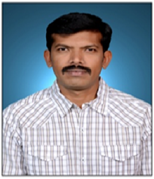

FacultyPathi Shiva Shanker
Assistant Professor · Interdisciplinary Faculty (Mechanical Engineering)
Key Highlights
Profile
Mr. Pathi Shiva Shanker is serving as an Assistant Professor in Mechanical Engineering as Interdisciplinary Faculty at University College of Engineering and Technology, Mahatma Gandhi University, Nalgonda, since 11 November 2013.
He completed his B.E in Mechanical Engineering from Shri Tulja Bhavani College of Engineering, Tuljapur (Dr. Babasaheb Ambedkar Marathwada University) in 1997 and M.Tech in CAD/CAM from Swamy Ramanandha Thirtha Institute of Science and Technology, JNTU Hyderabad.
He has 14 years of teaching experience and 8 years of industrial experience. He has worked as Head of Department in multiple institutions and has handled several administrative responsibilities throughout his career.
He has published research articles in friction welding and riveting joint techniques and has participated in international conferences, national seminars, workshops, and FDPs organized by institutions including NIT Warangal and NPTEL.
He is a Senior Member of the Indian Society of Mechanical Engineers (ISME) and has contributed extensively to academic and institutional development activities.
Academic & Administrative Contributions
Area of Specialization
Assistant Professor (Interdisciplinary Faculty)
University College of Engineering and Technology
Mahatma Gandhi University, Nalgonda
pathishivashankar@gmail.com